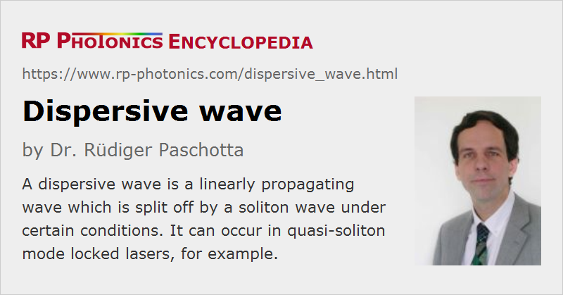

Dispersive Wave
Definition: a linearly propagating wave which is split off by a soliton wave under certain conditions
German: dispersive Welle
How to cite the article; suggest additional literature
Author: Dr. Rüdiger Paschotta
When an optical pulse is launched into a fiber with anomalous chromatic dispersion so that the pulse parameters do not exactly match those of a soliton, the pulse will evolve (within some propagation distance in the fiber) into a soliton pulse and some temporally spreading background. The latter is called a dispersive wave, because it is spreading due to the effect of group delay dispersion, and this is not compensated by the fiber nonlinearity, since the peak power is too low. The closer the parameters of the initial pulse are to the parameters of a soliton, the higher is the percentage of the pulse energy which ends up in the soliton rather than in the dispersive wave.
A dispersive wave can also be formed when the soliton is disturbed in some way, e.g. by a localized loss in the fiber (causing a deviation from the soliton condition by suddenly reducing the pulse energy) or by the transition into a fiber with modified parameters. Similar effects occur for quasi-soliton pulses circulating in the resonator of a mode-locked laser, where dispersion and nonlinearity usually occur in discrete packages rather than smoothly distributed as in a fiber. The circulating soliton is thus subject to periodically occurring disturbances, which couple the soliton to the copropagating dispersive wave. This also happens in a mode-locked fiber laser, even if its laser resonator is made from fibers only, since the pulse energy usually undergoes large changes in each round trip and also because fibers with different dispersion and/or nonlinearity may be used within the resonator. The periodic disturbance of the circulating soliton can result in the formation of Kelly sidebands.
Questions and Comments from Users
Here you can submit questions and comments. As far as they get accepted by the author, they will appear above this paragraph together with the author’s answer. The author will decide on acceptance based on certain criteria. Essentially, the issue must be of sufficiently broad interest.
Please do not enter personal data here; we would otherwise delete it soon. (See also our privacy declaration.) If you wish to receive personal feedback or consultancy from the author, please contact him e.g. via e-mail.
By submitting the information, you give your consent to the potential publication of your inputs on our website according to our rules. (If you later retract your consent, we will delete those inputs.) As your inputs are first reviewed by the author, they may be published with some delay.
See also: solitons, chromatic dispersion, Kelly sidebands
and other articles in the category light pulses
|  |
If you like this page, please share the link with your friends and colleagues, e.g. via social media:
These sharing buttons are implemented in a privacy-friendly way!